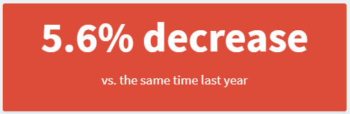

The goal of headliner is to help analysts to translate
facts to insights. In the comparison below (source),
both dashboards have the same underlying data but how they present the
information to the user is very different.

Right now, there isn’t anything out of the box to help users
dynamically create phrasing like used in the “insights” version without
a bit of coding gymnastics. The many ways you could approach it combined
with the steps required to say “if positive, show it like this, if
negative show it like that” increase the technical debt this kind of
code could add to a project. For this reason, headliner is
designed to deliver the building blocks required to create these phrases
for plot titles, value boxes in shiny or section headers in
a report.
Installation
You can install the dev version of headliner from github with:
devtools::install_github("rjake/headliner")Installation
For these examples, I will use a function called
demo_data() to build a data set based on the current date
(this was last run on 06/01/22).
library(headliner)
library(dplyr)
demo_data()
#> # A tibble: 10 × 5
#> group sales count on_sale date
#> <chr> <dbl> <dbl> <dbl> <date>
#> 1 a 101 35 1 2022-06-01
#> 2 a 102 34 0 2022-04-01
#> 3 b 103 33 1 2022-02-01
#> 4 b 104 32 0 2021-12-01
#> 5 c 105 31 1 2021-10-01
#> 6 c 106 30 0 2021-08-01
#> 7 d 107 29 1 2021-06-01
#> 8 d 108 28 0 2021-04-01
#> 9 e 109 27 1 2021-02-01
#> 10 e 110 26 0 2020-12-01A simple headline
What we want is to say something like this:
#> [1] "We have seen a 5.6% decrease compared to the same time last year (101 vs. 107)."We can look at the data an see that about 12 months ago,
sales was 107 where as today it is 101. We can give these
values to headline() and get a simple phrase
headline(
x = 101,
y = 107
)
#> [1] "decrease of 6 (101 vs. 107)"To see how the sentence was constructed, we can look at the
components used under the hood. This return_data = TRUE
returns a named list. I will condense with view_list()
headline(101, 107, return_data = TRUE) |>
view_list()
#> VALUES
#> headline decrease of 6 (101 vs. 107)
#> x 101
#> y 107
#> delta 6
#> delta_p 5.6
#> article_delta a 6
#> article_delta_p a 5.6
#> raw_delta -6
#> raw_delta_p -5.6
#> article_raw_delta a -6
#> article_raw_delta_p a -5.6
#> sign -1
#> orig_values 101 vs. 107
#> trend decreaseA custom headline
We can compose it like this using glue::glue()
syntax
headline(
x = 101,
y = 107,
headline = "We have seen {article_delta_p}% {trend} compared to the same time last year ({orig_values})."
)
#> [1] "We have seen a 5.6% decrease compared to the same time last year (101 vs. 107)."You might have noticed that there are multiple article_*
components available. article_delta is for the difference
between the two values (“a 6 person loss” vs
“an 8 person loss”), article_delta_p is
for the percentage difference for “a 5.6%” vs
“an 8.6%”. You can also add articles to words using
add_article(). For example
add_artice("increase") gives us “an
increase” vs add_artice("decrease") “a
decrease”.
Helpers for dynamic calculations
But let’s see if we can make the calculations more dynamic…
First, we can use a function called add_date_columns()
to calculate distances from the current date (or the reference date
specified) to the values in the date column . With these
new fields we can see that 04/01/22 was 61 days ago (or 9 weeks or 2
months, …) from the current date.
demo_data() |>
add_date_columns(date_col = date)
#> # A tibble: 10 × 11
#> group sales count on_sale date day week month quarter calendar_year
#> <chr> <dbl> <dbl> <dbl> <date> <dbl> <dbl> <dbl> <dbl> <dbl>
#> 1 a 101 35 1 2022-06-01 0 0 0 0 0
#> 2 a 102 34 0 2022-04-01 -61 -9 -2 0 0
#> 3 b 103 33 1 2022-02-01 -120 -17 -4 -1 0
#> 4 b 104 32 0 2021-12-01 -182 -26 -6 -2 -1
#> 5 c 105 31 1 2021-10-01 -243 -35 -8 -2 -1
#> 6 c 106 30 0 2021-08-01 -304 -44 -10 -3 -1
#> 7 d 107 29 1 2021-06-01 -365 -52 -12 -4 -1
#> 8 d 108 28 0 2021-04-01 -426 -61 -14 -4 -1
#> 9 e 109 27 1 2021-02-01 -485 -69 -16 -5 -1
#> 10 e 110 26 0 2020-12-01 -547 -78 -18 -6 -2
#> # … with 1 more variable: fiscal_year <dbl>We can then identify some conditions for our group of interest
(x) and our reference group (y). This step
uses the kind of logic you would use in dplyr::filter() or
base::subset() + the logic used by
dplyr::across()
yoy <- # year over year
demo_data() |>
add_date_columns(date) |>
compare_conditions(
x = (month == 0), # this month
y = (month == -12), # vs 12 months ago
.cols = sales, # the column(s) to aggregate
.fns = lst(mean) # the list of functions passed to summarise(across(...))
)
yoy
#> # A tibble: 1 × 2
#> mean_sales_x mean_sales_y
#> <dbl> <dbl>
#> 1 101 107The argument lst(mean) is equivalent to writing
list(mean = mean). The name (left side) is how it will name
the column, the right side is the function to use. If I had used
.fns = list(avg = mean) The names would have been
avg_sales_x and avg_sales_y and used
mean() as the calculation. Because
compare_conditions() uses the mean as the default, I’ll
omit it going forward.
You may want to do other steps with the data frame but if you want to
go right into a headline, you can use headline_list().
Another good option for adding headlines to data frames is
add_headline_column() (see next section)
yoy |>
headline_list(
headline = "We have seen {article_delta_p}% {trend} compared to the same time last year ({orig_values})."
)
#> [1] "We have seen a 5.6% decrease compared to the same time last year (101 vs. 107)."If your result has more than 2 values, you can specify the values you need by calling their names
car_stats <-
mtcars |>
compare_conditions(
x = cyl == 4,
y = cyl > 4,
.cols = starts_with("d"),
.fns = list(avg = mean, min = min)
)
view_list(car_stats)
#> VALUES
#> avg_disp_x 105.136364
#> avg_disp_y 296.504762
#> avg_drat_x 4.070909
#> avg_drat_y 3.348095
#> min_disp_x 71.100000
#> min_disp_y 145.000000
#> min_drat_x 3.690000
#> min_drat_y 2.760000
car_stats |>
headline_list(
x = avg_disp_x,
y = avg_disp_y,
headline = "Difference in avg. displacement of {delta}cu.in. ({orig_values})"
)
#> [1] "Difference in avg. displacement of 191.4cu.in. (105.1 vs. 296.5)"
car_stats |>
headline_list(
x = avg_drat_x,
y = avg_drat_y,
headline = "Difference in avg. rear axle ratio of {delta} ({orig_values})"
)
#> [1] "Difference in avg. rear axle ratio of 0.7 (4.1 vs. 3.3)"compare_conditions() can also be used to compare
categorical criteria.
pixar_films |>
compare_conditions(
rating == "G",
rating == "PG",
.cols = rotten_tomatoes
) |>
headline_list(
headline =
"Metacritic has an avg. rating of {x} for G-rated films and {y} for PG-rated films \\
({delta} points {trend})",
trend_phrases = trend_terms(more = "higher", less = "lower"),
n_decimal = 0
)
#> [1] "Metacritic has an avg. rating of 87 for G-rated films and 91 for PG-rated films (4 points lower)"
demo_data() |>
compare_conditions(
x = group == "a",
y = group == "c",
.cols = c(sales),
.fns = sum
) |>
headline_list(
headline = "Group A is ${delta} {trend} Group C (${x} vs ${y})",
trend_phrases = trend_terms(more = "ahead", less = "behind")
)
#> [1] "Group A is $8 behind Group C ($203 vs $211)"Within a data frame
You can also use add_headline_column() to append a
column to your data frame with headlines describing each row. You can
reference existing columns in the headline and you can bring back
specific talking points using return_cols =. You can use
this to find the most interesting phrases.
pixar_films |>
select(film, rotten_tomatoes, metacritic) |>
add_headline_column(
x = rotten_tomatoes,
y = metacritic,
headline = "{film} had a difference of {delta} points",
return_cols = c(delta)
) |>
arrange(desc(delta))
#> # A tibble: 22 × 5
#> film rotten_tomatoes metacritic headline delta
#> <chr> <dbl> <dbl> <chr> <dbl>
#> 1 Onward 88 61 Onward had a difference… 27
#> 2 Monsters, Inc. 96 79 Monsters, Inc. had a di… 17
#> 3 Cars 2 40 57 Cars 2 had a difference… 17
#> 4 Finding Dory 94 77 Finding Dory had a diff… 17
#> 5 Coco 97 81 Coco had a difference o… 16
#> 6 A Bug's Life 92 77 A Bug's Life had a diff… 15
#> 7 Monsters University 80 65 Monsters University had… 15
#> 8 Incredibles 2 93 80 Incredibles 2 had a dif… 13
#> 9 Toy Story 4 97 84 Toy Story 4 had a diffe… 13
#> 10 Toy Story 2 100 88 Toy Story 2 had a diffe… 12
#> # … with 12 more rowsAdding plural phrasing & multiple trend terms
You can add phrases to customize your sentences.
plural_phrases() allows you to add new variables to the
list of components available. Here I am adding {people} for
use in my headline.
headline(
x = 9,
y = 10,
headline = "{delta_p}% {trend} ({delta} {people})",
plural_phrases = list(
people = plural_phrasing(single = "person", multi = "people")
)
)
#> [1] "10% decrease (1 person)"You can actually pass multiple trend_terms() and
plural_phrasing() options.
# lists to use
more_less <-
list(
an_increase = trend_terms("an increase", "a decrease"),
more = trend_terms(more = "more", less = "less")
)
are_people <-
list(
are = plural_phrasing(single = "is", multi = "are"),
people = plural_phrasing(single = "person", multi = "people")
)
# notice the difference in these two outputs
headline(
x = 25,
y = 23,
headline = "There {are} {delta} {more} {people} ({an_increase} of {delta_p}%)",
trend_phrases = more_less,
plural_phrases = are_people
)
#> [1] "There are 2 more people (an increase of 8.7%)"
headline(
x = 25,
y = 26,
headline = "There {are} {delta} {more} {people} ({an_increase} of {delta_p}%)",
trend_phrases = more_less,
plural_phrases = are_people
)
#> [1] "There is 1 less person (a decrease of 3.8%)"An example with valueBox()
Here’s an example that uses headliner to create a
valueBox() in shiny with dynamic colors and
text.
show <- compare_values(101, 107)
box_color <- ifelse(show$sign == -1, "red", "blue")
valueBox(
value =
headline(
show$x,
show$y,
headline = "{delta_p}% {trend}"
),
subtitle = "vs. the same time last year",
color = box_color
)